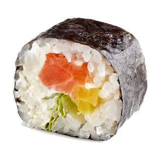

Sobre o nosso espaço
Localizada no coração da cidade o sushi do Noah traz para o mercado o que há de melhor para culinária japonesa. Fundado em 2019, o Sushi do Noah já é destaque na cidade e conquista novos clientes a cada dia.
Nossa missão é: "Proporcionar qualidade aos clientes"
Oferecemos profissionais experientes e antenados às mudanças no mundo. O atendimento possui padrão de excelência e agilidade, garantindo qualidade e satisfação dos nossos clientes.
Nosso estabelecimento
Nosso estabelecimento está Localizado no coração da cidade
Benefícios
- Atendimento aos clientes
- Espaço diferenciado
- Localização
- Profissionais qualificados